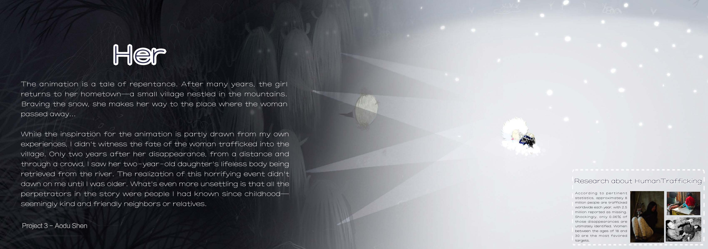
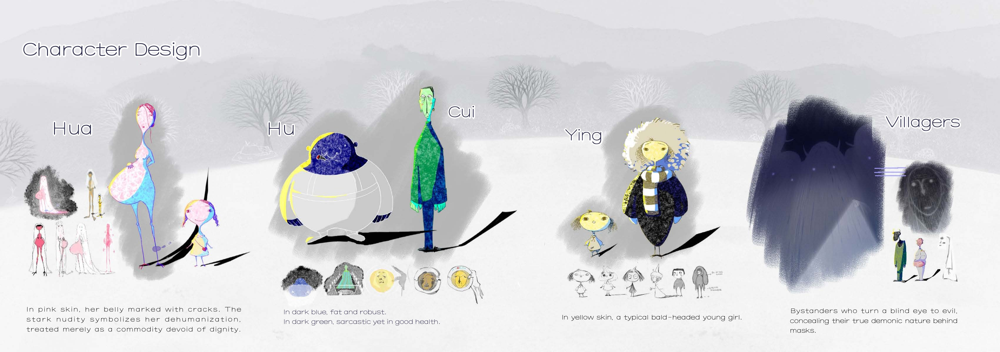
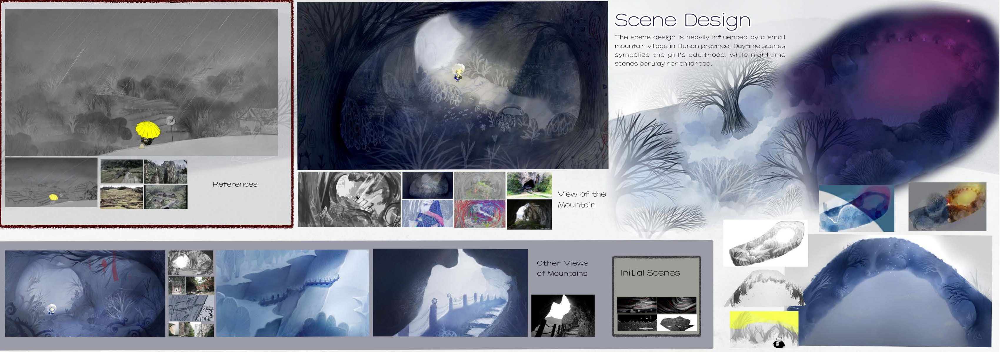
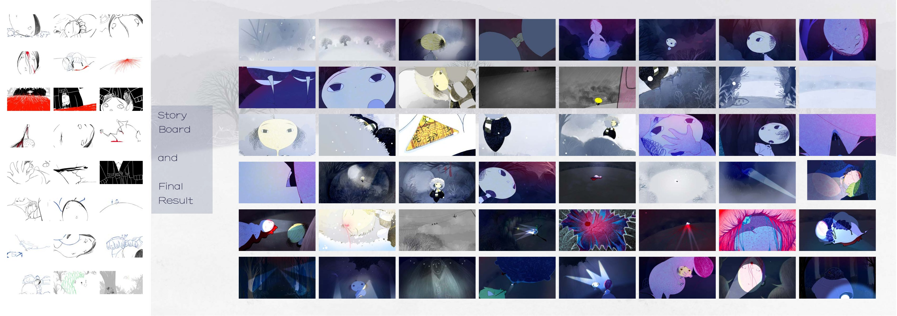

Burying
埋葬时分
山村长大的女孩多年后回到了这里，她将要面对的是一段发生在遥远的过去、关于另一位女性的故事……
Years later, a girl who grew up in a mountain village returns. What awaits her is a story from the distant past about another woman...
项目类型：2D动画 · 完成日期：2025年4月1日 · 动画时长：4分49秒
Project type: 2D animation · Completion date: April 1, 2025 · Animation duration: 4 min 49 sec
美术设计 / Art Design



